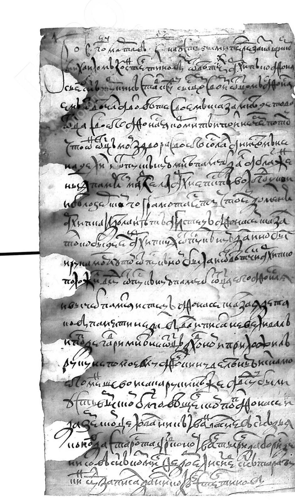

ГАВО • Ф. 1260, ОП. 1, Д. 2347
Судебное дело на Усть-Выми: Афанасий, Архип и староста Иван Туркины
Подлинная отпись 6 октября 1656 г. • Допросные речи перед духовным заказчиком 20 марта 1664 г.
🏛️ Главная
🌳 Древо Туркиных
📄 Лист 1 (л. 1)
Допросные речи 1664 г.
✍️ Лист 1 об. (л. 1 об.)
Подписи старосты и священников
📜 Лист 2 (л. 2)
Отпись Афанасия Туркина 1656 г.
🏷️ Лист 2 об. (л. 2 об.)
Архивная помета
💡 Источниковедческий анализ
Лица и термины
+
−
↺
⛶

Лист 1 • Допросные речи (20 марта 1664 г.)
Строка за строкой
Связный текст